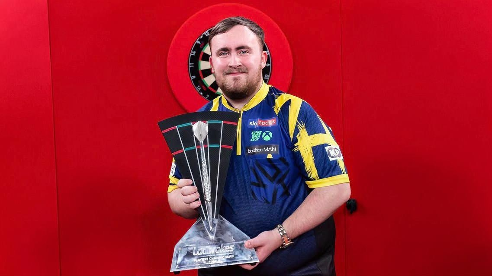

A zárt ajtók mögött zajló, nem televíziós ProTour-versenyek éves ranglistájának legjobb játékosai csapnak össze, közvetlenül a világbajnokság főpróbájaként.
Az év utolsó nagy tornája, a tizenegyedik.
Luke Littler nem kvalifikálta magát a 2026-os Players Championship Finals tornára. Bár ő volt a címvédő (a 2025-ös kiírást megnyerte Nathan Aspinall ellen), a 2026-os szezon döntő többségében kihagyta a Pro Tour állomásait.😭
Ekkor rendezik az ifjúsági vb-t is, közvetlenül a Players Championship Finals színpadán, a döntő előtt játszák le.
November vége
Minehead - Butlin's Minehead Resort (Anglia)(ugyanaz mint a UK Open)